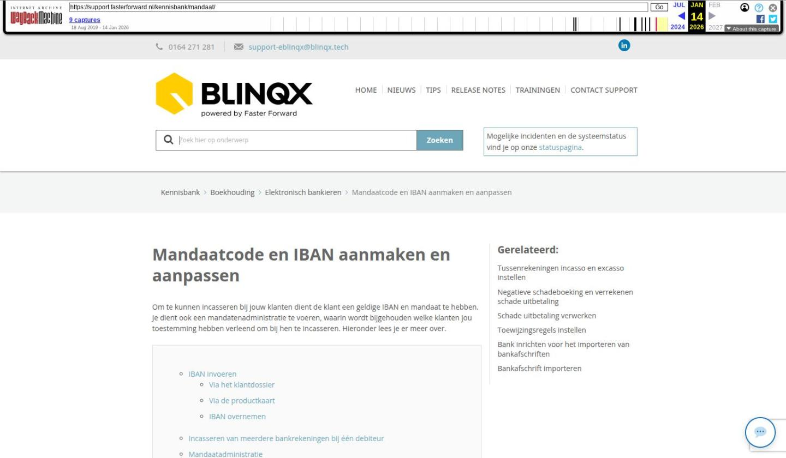

Mandaatcode en IBAN aanmaken en aanpassen

Tekstinhoud
Mandaatcode en IBAN aanmaken en aanpassen
Om te kunnen incasseren bij jouw klanten dient de klant een geldige IBAN en mandaat te hebben. Je dient ook een mandatenadministratie te voeren, waarin wordt bijgehouden welke klanten jou toestemming hebben verleend om bij hen te incasseren. Hieronder lees je er meer over.
IBAN invoeren
Via het klantdossier
Via de productkaart
IBAN overnemen
Incasseren van meerdere bankrekeningen bij één debiteur
Mandaatadministratie
Filter
Status aanpassen
Mandaat genereren vanuit dossier
Mandaat genereren vanuit productkaart
IBAN al ingevuld
Mandaat genereren onder de persoon of organisatie
Mandaatcode aanpassen vanuit dossier
Datum goedkeuring aanpassen
Rapportage
IBAN invoeren
Via het klantdossier
Het IBAN kan je invoeren onder de persoon of onder de organisatie echter hier wordt deze niet opgehaald om te kunnen incasseren. Het rekeningnummer moet dan ingevoerd zijn via het klantdossier – Partijen & Objecten – betreffende persoon of organisatie – tabblad Financieel. Let op: dit tabblad is alleen zichtbaar als de persoon of organisatie in het tabblad 'Detail' is aangemerkt als debiteur of crediteur.
Hier selecteer je de bank en vul je het rekeningnummer in.
Via de productkaart
Verschillende producten kan je automatisch incasseren. Het is dan belangrijk dat zowel het IBAN als mandaat goed staat ingesteld. In de productkaart wordt weergegeven als dit niet het geval is. Dit is van toepassing op schade- en levensverzekeringen, diensten en contracten van het type 'Incasso' en automatisch factureren op 'Ja'. Voor schade- en levensverzekeringen moet het om TP incasso gaan. Staat het IBAN niet goed ingericht dan staat er in de productkaart een rood kruis achter IBAN. Deze check wordt niet weergegeven bij een organisatie.
Hier kan je op klikken om het IBAN in te stellen. Je wordt doorgeleid naar het juiste scherm. Hier kan je het IBAN invullen.
IBAN overnemen
Het kan zijn dat onder de persoon of organisatie een IBAN nummer opgevoerd staat, maar dat deze niet onder de subadministratie staat of dat dit een ander nummer is. In het klantdossier – Partijen & Objecten – betreffende persoon of organisatie – tabblad Financieel kan je dan gemakkelijk dit nummer overnemen.
Incasseren van meerdere bankrekeningen bij één debiteur
Het is niet mogelijk om onder éénzelfde persoon of organisatie meerdere IBAN-rekeningen op te voeren en dus van 2 verschillende IBAN-rekeningen te incasseren.
Er is hiervoor wel een workaround. Je kunt een overig partij aanmaken, bijvoorbeeld premiebetaler. Je zorgt ervoor dat je deze overige partij kunt selecteren in het product. Deze overige partij voeg je toe aan het betreffende dossier. Hieraan koppel je dan niet de persoon die al bestaat, maar je maakt via het plusicoon de persoon nogmaals aan. Onder persoon 1 vul je het ene IBAN in, onder persoon 2 vul je het andere IBAN in.
In de ene pakketpolis selecteer je persoon 1 en in de andere pakketpolis selecteer je persoon 2. Op deze manier kan je wel van twee verschillende IBAN-rekeningen incasseren.
Mandaatadministratie
De mandaatadministratie vind je terug via Financieel – Elektronisch bankieren – Mandaatadminstratie. Hier vind je de volgende gegevens terug:
Dossier
Naam
Mandaat code
Toegevoegd
Goedgekeurd
Status
Filter
Via het filter kan je zoeken op mandaat code, dossiernummer, naam of status
Status aanpassen
Via de pijl achteraan de regel kan je de status en datum goedgekeurd wijzigen.
Mandaat genereren vanuit dossier
Naast de mandaatmodule is het mogelijk om in het dossier de mandaatcode te genereren en accepteren. Dit kan op twee manieren, namelijk vanuit de productkaart of onder de persoon.
Mandaat genereren vanuit productkaart
Het genereren vanuit het product is van toepassing op schade- en levensverzekeringen, diensten en contracten van het type 'Incasso' en automatisch factureren op 'Ja'. Voor schade- en levensverzekeringen moet het om TP incasso gaan. Bij een organisatie wordt deze check niet weergegeven. Ga hiervoor naar het product of de dienst. Je ziet hier de status van het IBAN en mandaat. Om een mandaat te kunnen genereren moet er een geldig IBAN aanwezig zijn. Is deze er niet dan staat er een rood kruis achter IBAN. Door hierop te klikken ga je direct naar het juiste scherm om de IBAN in te regelen. Vanuit dit scherm kan je ook direct het mandaat genereren en accepteren. Zie hiervoor 'Mandaat genereren onder de persoon' vanaf stap 4.
IBAN al ingevuld
Als de IBAN al is ingevuld, maak je in één klik de mandaatcode aan. Dit door te klikken op 'Mandaat'.
Als je op 'Mandaat' klikt, wordt er automatisch onder het tabblad Financieel onder de persoon een mandaatcode aangemaakt voor die persoon. De mandaatstatus komt op Geaccepteerd te staan en bij 'Mandaat goedgekeurd' komt de de datum te staan van het moment van klikken.
Als alles is geregeld, zie je 2 groene vinkjes onder 'Factuur' bij je dienst of product.
Mandaat genereren onder de persoon of organisatie
Voor het genereren van het mandaat onder de persoon doorloop je deze stappen:
In het dossier ga je naar het tabblad Partijen & objecten
Hier klik je op de betreffende persoon of organisatie of je klikt op het wijzigingsicoon
Je gaat naar het tabblad Financieel. Let op: alleen zichtbaar als in het tabblad Detail de persoon of organisatie is aangemerkt als debiteur of crediteur
Hier klik je op de knop Genereer mandaatcode
Nadat je op 'Genereer mandaatcode' hebt geklikt dan worden de velden Mandaat goedgekeurd en Mandaatstatus automatisch gevuld met de datum van klikken en status Geaccepteerd.
Mandaatcode aanpassen vanuit dossier
Het kan zijn dat het rekeningnummer van de klant wijzigt. Hierdoor moet er ook een nieuwe mandaatcode aangemaakt worden. Hiervoor doorloop je bovengenoemde stappen 1 t/m 3. Bij het veld Bank selecteer je de juiste Bank en bij het veld IBAN vul je het nieuwe rekeningnummer in. Nadat je hebt opgeslagen komt de knop 'Genereer mandaatcode' weer zichtbaar.
Je kunt ook onder persoon of organisatie – kopje bankrekeningnummers het rekeningnummer van de klant toevoegen. Indien dit rekeningnummer afwijkt van het rekeningnummer dat staat onder het tabblad Financieel dan krijg je het volgende bij Financieel te zien:
Je kunt dan klikken op 'Overnemen' en vervolgens opslaan. Het IBAN nummer wordt gewijzigd en de 'Genereer mandaatcode' knop wordt weer zichtbaar.
Datum goedkeuring aanpassen
De datum waarop de mandaat goedgekeurd wordt, kan aangepast worden. Wordt de mandaat administratie later ingevoerd, dan kan de juiste datum overgenomen worden. Indien er geen datum ingevoerd wordt, wordt automatisch de datum van vandaag opgeslagen.
Rapportage
In de rapportage Beheer – Controle IBAN nummers vs mandaat kan je per dossier de IBAN nummers en mandaat terugvinden. Via deze rapportage zou je een selectie kunnen maken. Staat deze rapportage niet in jouw omgeving? Stuur dan een e-mail naar support-eblinqx@blinqx.tech.
Laatste update: 15 oktober 2025
Was deze informatie nuttig?
Ja Nee